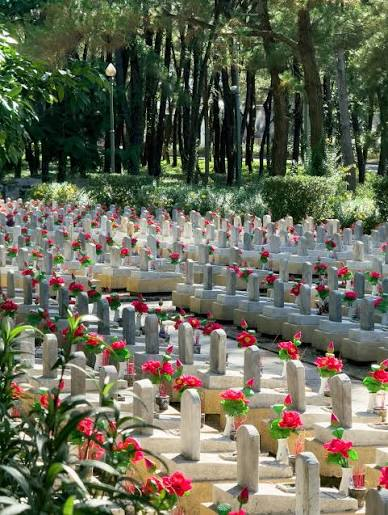
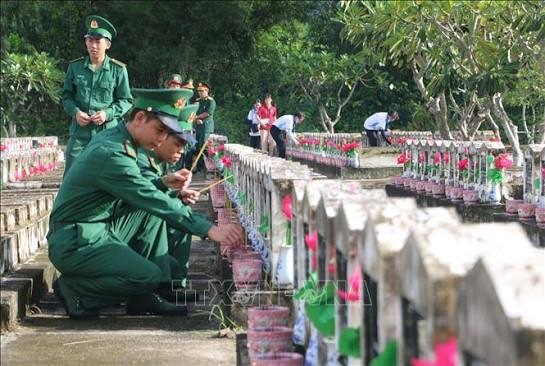

Địa chỉ đỏ tri ân các anh hùng liệt sĩ
Nơi ghi dấu lịch sử và truyền thống uống nước nhớ nguồn

Nghĩa trang liệt sĩ Quốc gia Trường Sơn nằm tại khu vực Bến Tắt, tỉnh Quảng Trị. Đây là nơi an nghỉ của các chiến sĩ đã hy sinh trên tuyến đường Trường Sơn trong cuộc kháng chiến chống Mỹ cứu nước.
Công trình được khởi công xây dựng năm 1975 và hoàn thành vào tháng 4 năm 1977.
Nghĩa trang có diện tích khoảng 140.000 m², là nơi quy tụ hơn 10.000 phần mộ liệt sĩ.
Nơi đây thể hiện lòng biết ơn sâu sắc của nhân dân đối với những người đã hy sinh vì độc lập, tự do của Tổ quốc.

Tìm hiểu lịch sử hình thành, ý nghĩa và những thông tin về Nghĩa trang liệt sĩ Quốc gia Trường Sơn.
Truy cập website →Xem những hình ảnh và thông tin về các hoạt động tưởng niệm, tri ân tại Nghĩa trang liệt sĩ Trường Sơn.
Truy cập website →Cập nhật thông tin về công tác tìm kiếm, quy tập và xác định danh tính các anh hùng liệt sĩ.
Truy cập website →Tìm hiểu công nghệ số hỗ trợ tra cứu thông tin và vị trí phần mộ liệt sĩ tại Quảng Trị.
Truy cập website →